Xperia™ Chinese Text Input User Manual 1
2.1 Switching between languages and input methods 2
2.2 Switching between keyboard modes 2
2.5 Inputting symbols, numbers, emoticons 7
3. Functionalities suitable for each input language 10
3.1 Predictive functionality 10
3.4 Switching between Simplified and Traditional Chinese 11
4 Unique features of the Chinese Pinyin input method 12
4.1 Chinese Pinyin input layout 12
5. Unique features of the Chinese Strokes input 13
5.1 Chinese Strokes input layout 13
5.5 Prediction feature based on context 14
5.6 Phrase or sentence prediction 15
6 Unique features of the Chinese Handwriting input 15
6.1 Chinese Handwriting input layout 15
6.2 Chinese Handwriting input settings 17
6.3 English Handwriting input 17
7. Unique features of the Phonetic input 18
8. Unique features of the Cangjie input 19
Chinese text input methods for Simplified Chinese, Traditional Chinese and English. Chinese input including Pinyin input, Strokes input, Handwriting input, Phonetic input and Cangjie input.
Tap the language key on the keyboard, such as 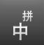 and 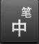, to change the language to English. Long tap this key to switch between input methods.
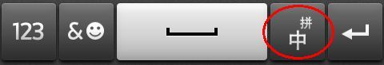
In addition to the Strokes and Handwriting input modes, long tap the language key on the keyboard, such as and , to switch between the phone keypad and the full keyboard.
2.3.1 Pinyin input
In the Pinyin input mode, you can type Chinese characters using pinyin. For example, tap the 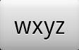 keys to enter the pinyin “wo”. You will see the Chinese character “我” and other word selections.
Single tap the icon next to the word selection list to display additional word selections.
For details, see Chapter 4.
2.3.2 Strokes input
In the Strokes input mode, you can type Chinese characters by entering the strokes of the Chinese characters in sequence. For example, enter [丿][ 一][丨], and the Chinese character “我” and other word selections will appear in the word selection list.
Single tap the icon next to the word selection list to display additional word selections.
For details, see Chapter 5.
2.3.3 Handwriting input
In the Handwriting input mode, you can enter Chinese characters by writing directly on the screen. After you are finished writing a Chinese character, the screen will display word suggestions and word associations.
For details, see Chapter 6.
2.3.4 Phonetic input
In the Phonetic input mode, you can type Chinese characters using phonetics. For example, enter [ㄅ] [ㄠ], and the Chinese characters “報”, “包”, “保”, “寶” will appear in the word suggestion list.
Single tap the icon next to the word selection list to display additional word selections.
2.3.5 Cangjie input
In the Cangjie input mode, you can type Chinese characters using Cangjie input. For example, enter [一] [土] [田] [土] in sequence, then the Chinese character “理” will appear in the word selection list.
The English input layout consists of the Keypad mode and the Full Keyboard mode：
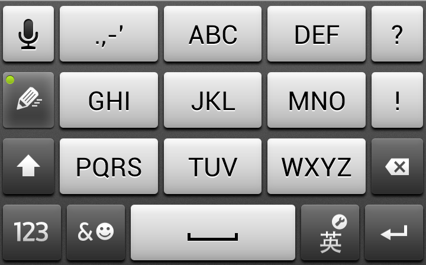
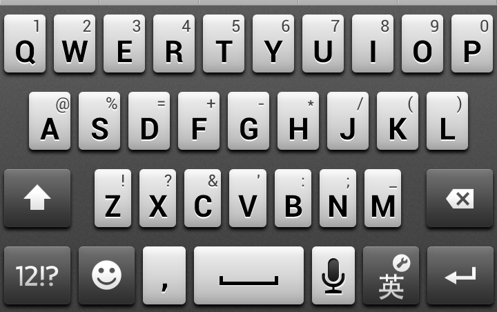
In the English letter input mode, tapping a key will enter the first letter of that key, but a word selection list will be available at the bottom of the screen for a more precise selection.
Click the key to switch letter case.
: Capitalize initial letters.
: Lock uppercase input mode.
: Lowercase mode.
In addition, tap the key to switch between precision typing mode and rapid word association mode while typing English.
2.3.7 Input word selection
Tap on a word selection to directly enter that word. In certain input mode, if the highlighted word selection is the Chinese character that you wish to input, you can tap the key to enter that word.
2.3.8 Selecting from Word Selection List
During Chinese input, tap the arrow next to the word selection list to enter the full word selection list. Slide down the full selection list to display more word selections. More word selections can also be displayed by sliding down the word selection list.
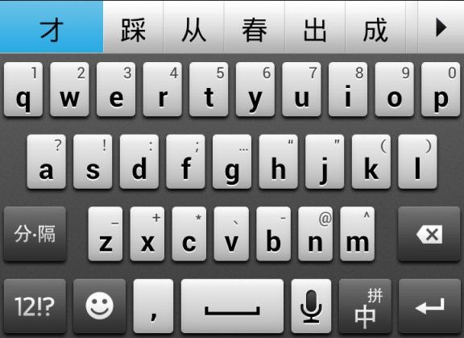
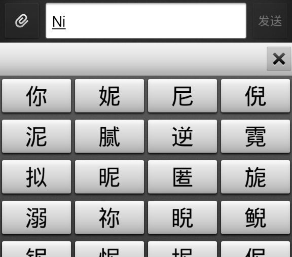
2.3.9 Pinyin or phonetic filter
While in the Phone Keypad mode, the pinyin or phonetic combination of the Chinese character is shown at the top of the keyboard. Tap a pinyin or phonetic combination to filter out all of the corresponding Chinese characters or phrases.
While in the Pinyin or Phonetic input mode, pull down the pinyin or phonetic selection list above the word selection list to view additional selections of pinyin combination or phonetic combination.
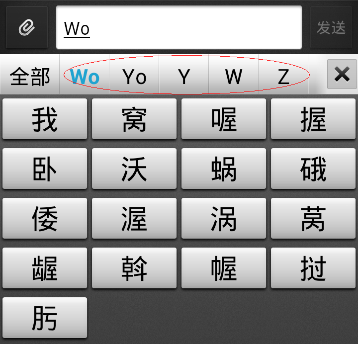
2.3.10 Handwriting on keyboard
In any keyboard mode, you can handwrite Chinese characters on keyboard directly.
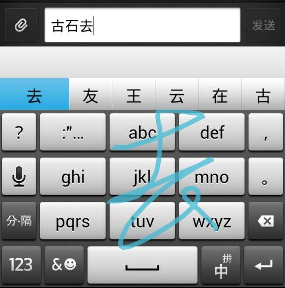
You can select “Gesture on keyboard” -> “Handwriting on keyboard” to enable or disable this function.
2.3.11 Voice input
You can tap button to use your voice to input characters directly.
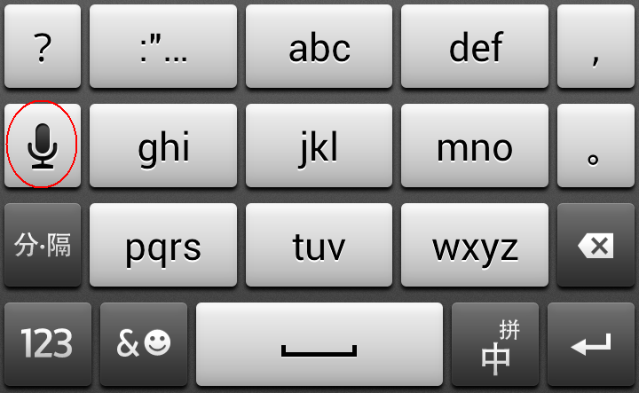
Note: Voice input can turned off in settings menu.
To avoid the interference of the keyboard under certain input modes, the software has provided the Hide Keyboard feature. Long tap the language key to enter the switching page and select Settings. In the Settings page, you can turn the Hide Keyboard option on or off. The keyboard will then show or hide the Hide Keyboard key correspondingly when entering text. Tap this key to hide the keyboard.
Under Phone Keypad mode:
Tap the key to enter the symbols page. You can now enter the desired symbols such as numbers, punctuations or emoticons by sliding over the keyboard.
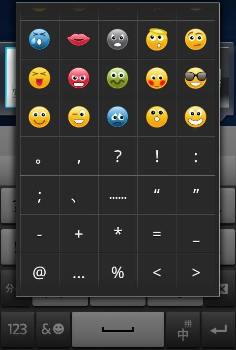
There are two different layouts under the full keyboard mode:
1 Under the Non-hidden Keyboard layout:
Tap the key to enter the emoticons page,
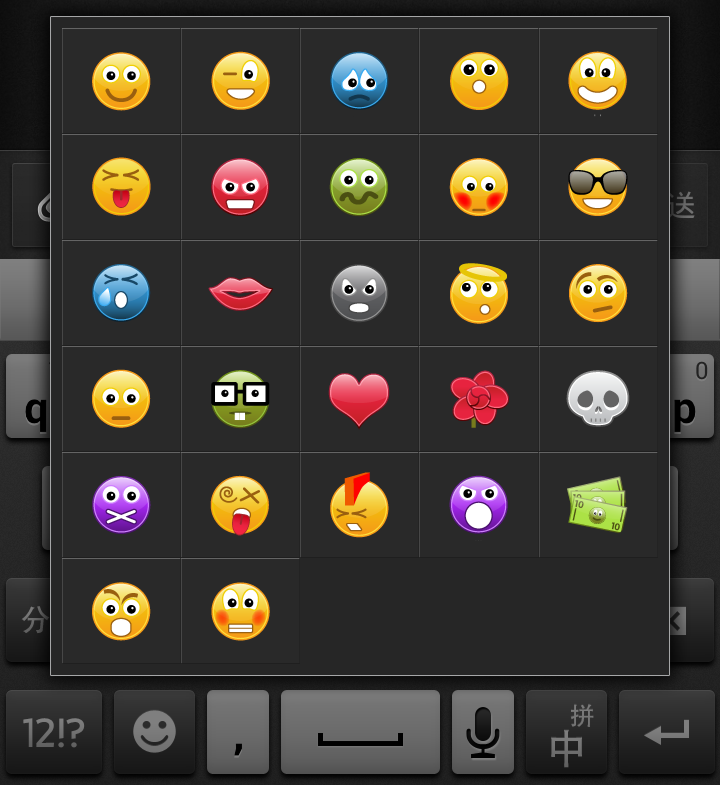
Tap the key to enter the common symbols page
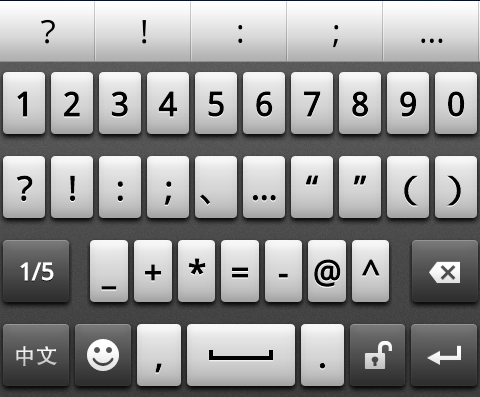
At this point you can select the number, punctuation and other symbols that you wished to input.
Note: While in Full Keyboard mode, tap the key to lock the symbols page, to enter consecutive symbols.
2. Under the Hide Keyboard mode:
Tap the key to enter the common symbols page，
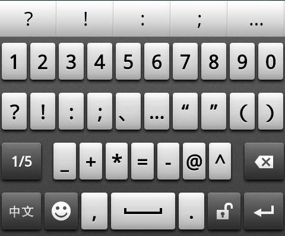
Long tap the key to enter the emoticons page.
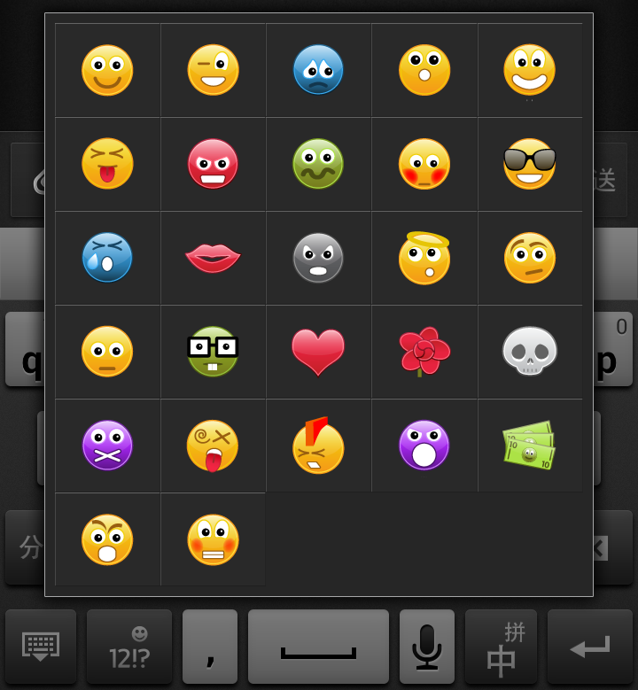
Long tap the language key, such as or , to enter the switching screen and select Settings. In the Settings page, you can turn each of the Settings options on or off.
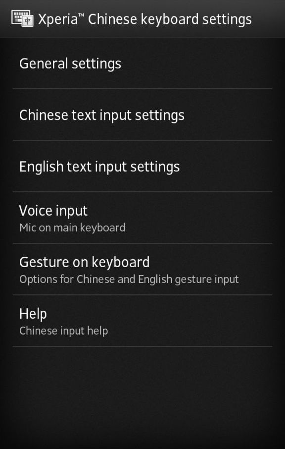 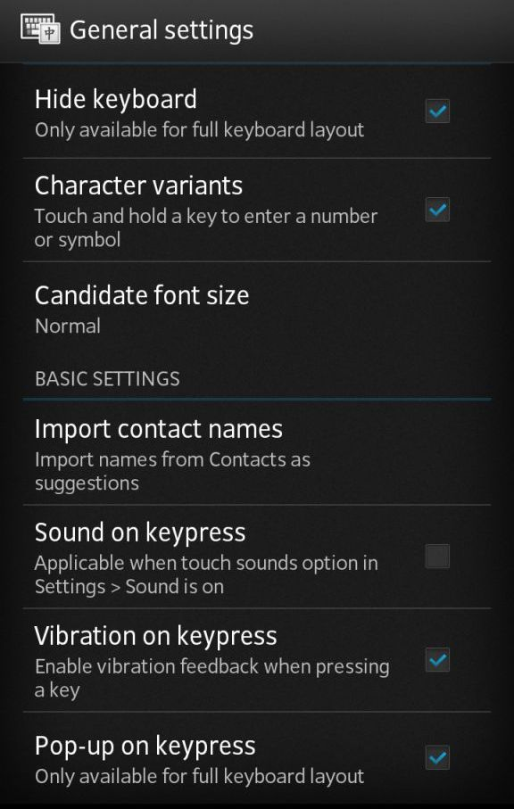
In the Settings page, select the “Help” option to read the user manual.
During Chinese input, each input method will automatically predict the character that you are trying to enter according to the dictionary. For example, if you tap the keys, then the word selections such as “我” and “喔” will be automatically predicted.
3.1.2 Word association
When you enter a Chinese character, the input method will automatically find all word associations corresponding to the Chinese character that you have entered.
For example, during Chinese input, enter “我”, and word associations such as “们”，“是”，“的”，“国” will be automatically predicted.
This feature is enabled by default. You can deselect the “Word Association” option in the Settings page to turn off this feature.
The name of the command key will change according to the changes in the input environment. For example, the name of the command key will automatically switch to [下一步] ([Next]), [完成] ([Done]), [发送] ([Send]), [开始] ([Begin]), and so on.
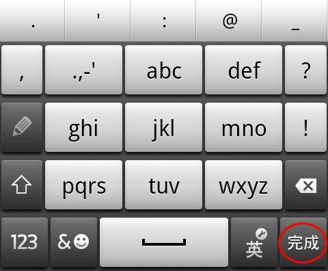
3.3.1 Vibrate and pop-up feedbacks on key tap
This input method supports vibrate and pop-up feedbacks on key tap. The vibrate and pop-up feedbacks are enabled by default. You can select or deselect the “Vibrate feedback” and “Key tap pop-up effect” options in the Settings page.
3.3.2 Key sounds
This keyboard supports key sound effects. If the system sounds of your mobile phone have been enabled, and you have enabled key sounds for the input method, there will be sound effects when you tap a key. If the system sounds of your mobile phone have been disabled, there will be no sound effect when you tap a key. Please refer to your phone's user manual for how to turn on the system sounds of your mobile phone.
In the Settings page, select the “Traditional Chinese input” option and Traditional Chinese will appear when you enter Chinese text.
Under the Full-keyboard mode when entering text using Pinyin, English or Cangjie, long tap a letter to enter the symbol or number indicated under that letter. For example, when in the Chinese Pinyin input mode, long tap the [f] key to enter “;” (semicolon).
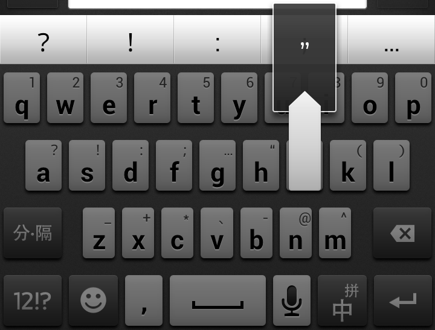
The Chinese Pinyin input layout consists of the Keypad mode and the Full Keyboard mode:
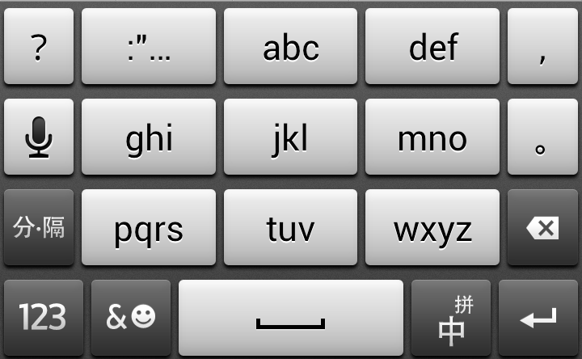
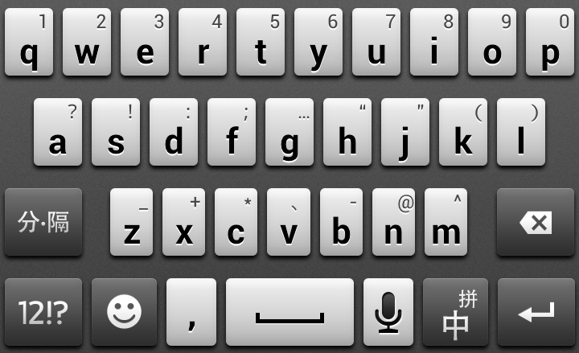
Chinese Pinyin input supports Full Pinyin input. For example, tap the keys to enter the pinyin “zhong”, and the Chinese character “中” will appear in the word selection list.
Chinese Pinyin input supports Partial Pinyin input. For example, tap the keys to enter the pinyin “wom”, and the Chinese characters “我们” will appear in the word selection list.
If you cannot distinguish between some commonly used pinyin, you can select the “Fuzzy Pinyin” option and select the Fuzzy Pinyin combination in the Settings page to enable the Fuzzy Pinyin input feature. For example, if you have selected “z = zh”, when you enter “z”, all pinyin with the initial of “zh” will appear. Therefore, if you enter “zidao”, the word “知道” will still be predicted.
When you are using pinyin to input a phrase or sentence, you can use the key to separate each Chinese character in that phrase or sentence.
There is only one layout for the Chinese Strokes input.
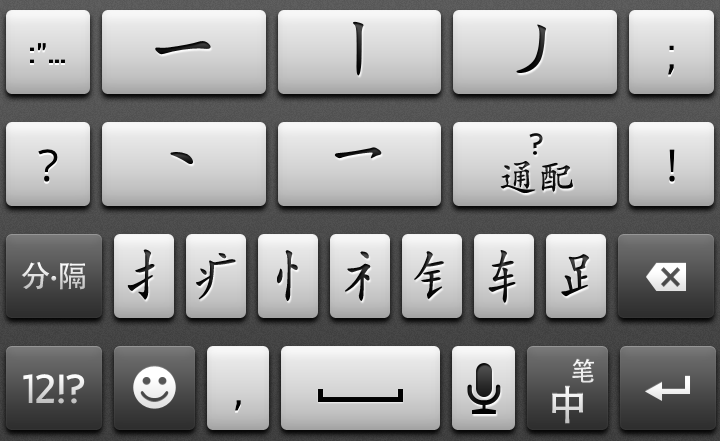
You can input a Chinese character by entering its strokes in sequence.
The on-screen keyboard has provided seven commonly used radicals to facilitate more efficient input.
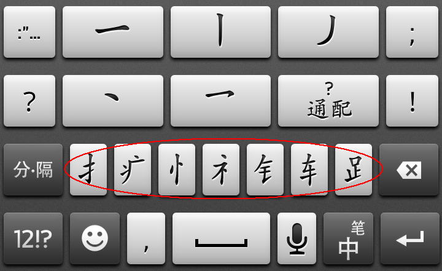
Tap the key to enter a wildcard character. Use the wildcard character to substitute any strokes that you don’t know.
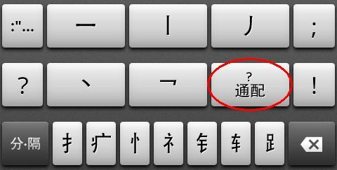
This input method can predict word suggestions based on the context of the text input. For example, first enter the Chinese character “我”, then enter “丿 ”, and the Chinese character “们” will appear in a more prominent position in the word suggestion list compared to the independent entry of “丿 ”.
The Chinese Strokes input supports intelligent phrase or sentence prediction. When entering a Chinese character or phrase, tap the key and the phrase or sentence that matches that Chinese character will appear in the word selection list. In addition, when entering a phrase or sentence using Chinese Strokes input, you can use the key to separate each Chinese character in that phrase or sentence.
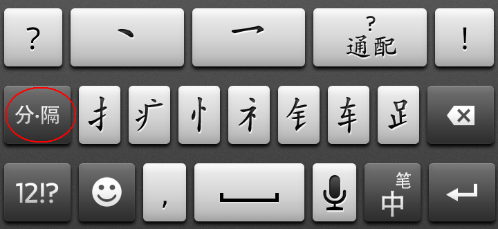
The Chinese Handwriting input layout consists of the Full-screen Handwriting mode and the Half-screen Handwriting mode.
Full-screen handwriting:
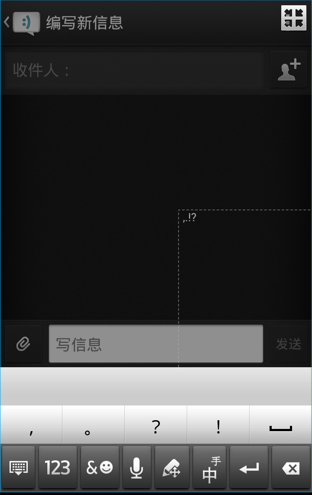
Note: While in Full-screen Handwriting mode, tap the key to expand the available command keys.
Half-screen handwriting:
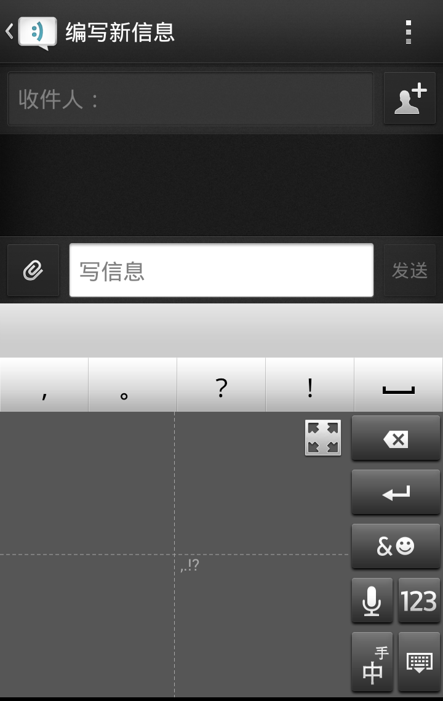
Note: When the phone is in landscape mode, meaning that the phone is being held horizontally, the Handwriting input mode allows for the tapping of other function keys on the screen while using Chinese Handwriting input. The landscape mode is also the Full-screen Handwriting mode.
You can also input Chinese characters on any keys and word selection bar directly.
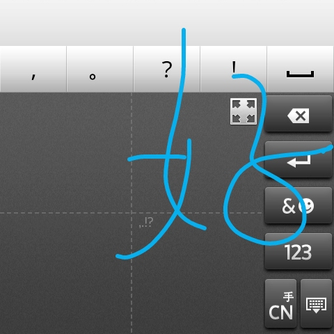
Among the Chinese Handwriting options in the Settings page, you can customize the width of the strokes, the recognition intervals and the display color of the strokes.
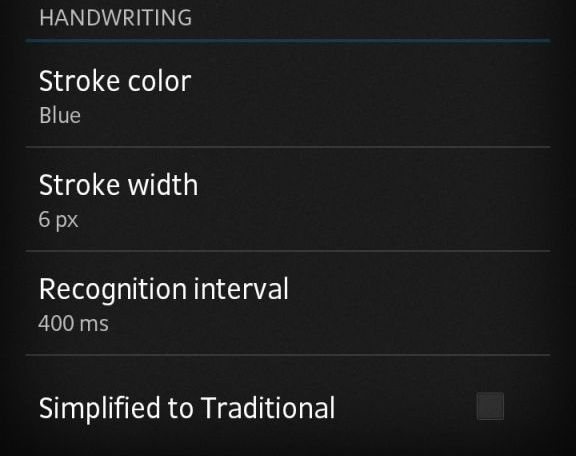
In English handwriting input mode, you can input a whole English word at one time.
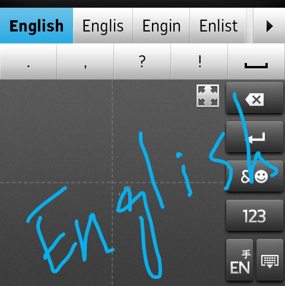
The Phonetic input layout consists of the Phone Keypad mode and the Full Keyboard mode.
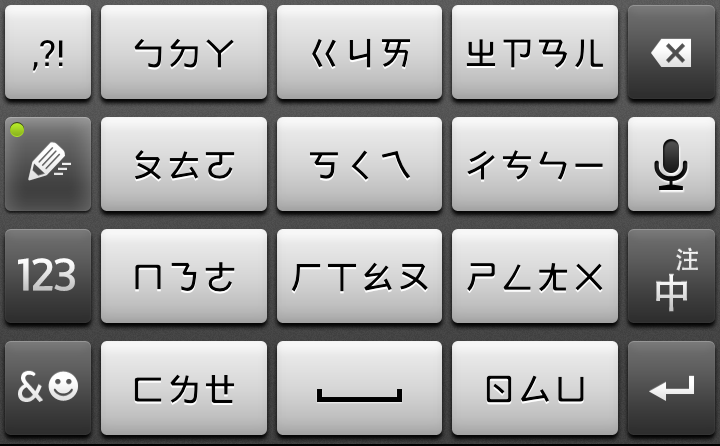
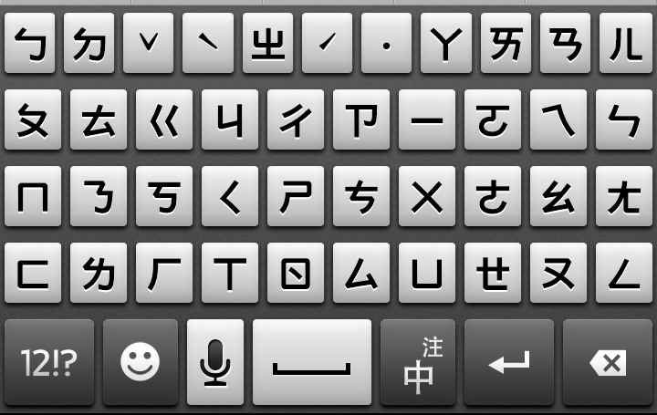
In the Phonetic input mode, you can type Chinese characters using phonetics. For example, tap [ㄅ] [ㄠ], and the Chinese characters “報”, “包”and so on will appear in the word suggestion list.
You can type a phoneme to filter out the word suggestions for that phoneme. Select the phoneme by tapping the key to enter the first phoneme, then tap the phoneme key (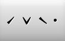) to enter the second phoneme, double tap the same key to enter the third phoneme, and so on.
Tap the key on the right of the word selection list to enter the Full Word Selection mode. You can now slide the keyboard vertically to display additional word selections to choose from.
The Cangjie input layout consists of the Phone Keypad mode and the Full Keyboard mode.
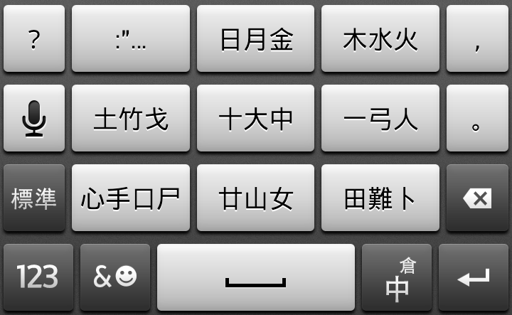
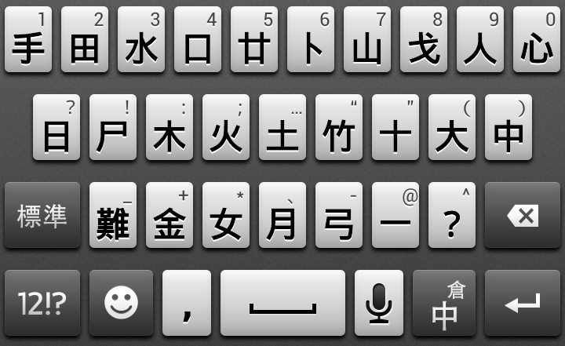
In the Cangjie input mode, you can type Chinese characters using Cangjie input. For example, enter[一] [土] [田] [土] in sequence, then the Chinese character “理” will appear in the word suggestion list.
Tap the icon next to the word selection list to enter Full Word Selection mode. You can now slide the keyboard vertically to display additional word selections to choose from.
Press the key to enter the Quick Canjie input mode. Its character encoding rules are the same as the Cangjie input, but it only takes the first and last entries of the Cangjie code, instead of the first and last entry codes for each component of the character. Therefore, there is a maximum of two codes for any Chinese character.
For example, when you enter [口] [口], then the Chinese character “哈” will appear in the word suggestion list.
In full keyboard mode, you can write by sliding your finger from letter to letter, lifting it only between words/characters.
In Settings menu, you go to “Gesture on keyboard”->”Gesture input”, and check or uncheck the language mode based on your need. This function only support in English, Pinyin and Zhuyin input mode.
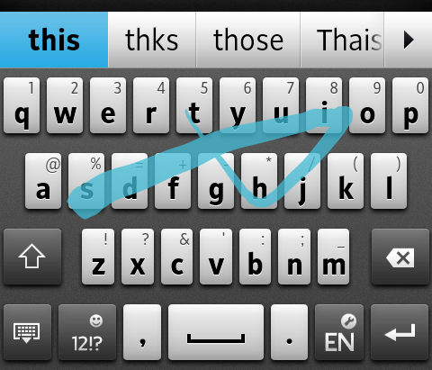
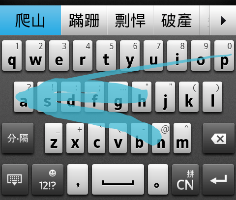
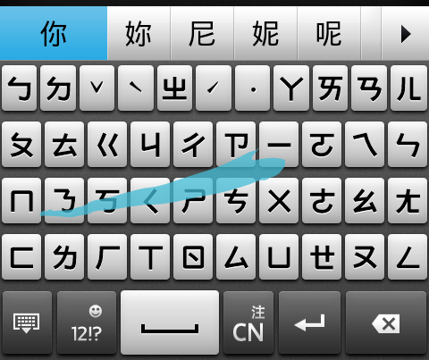
Note: Gesture input and handwriting on keyboard cannot be used at the same time.